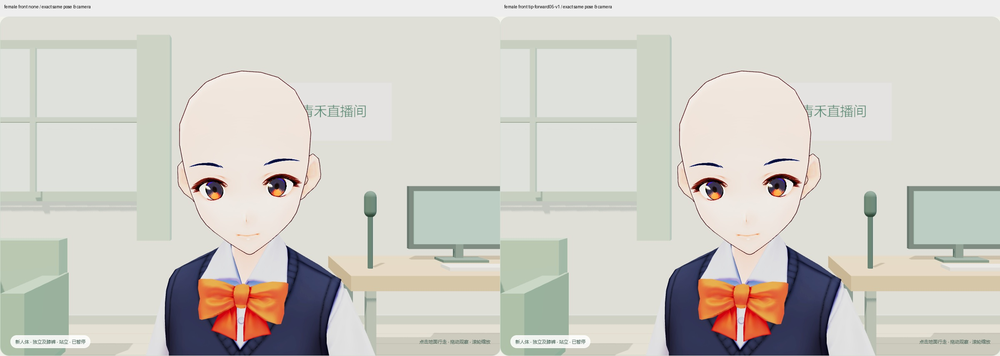
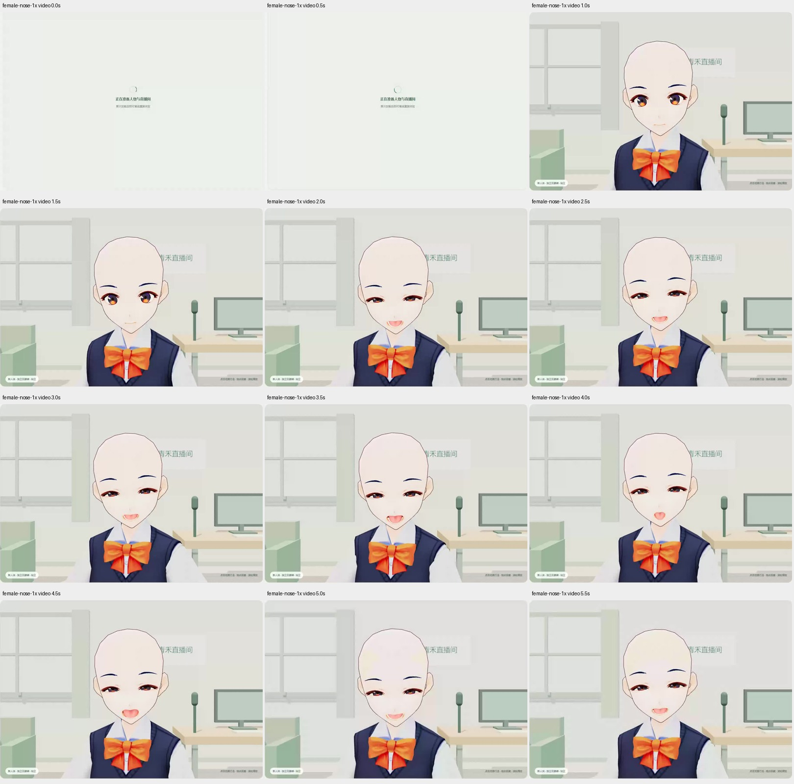

00fdad393503 · 原男女鼻尖单端点样件
唯一鼻尖端点：向前 +0.5mm，非任意鼻部编辑；可与已有眉位组合及嘴宽±4%共存。13项定向技术检查通过；视觉请观看原片，勿从技术门推定自然度。
同姿原位 / 新鼻尖

逐值核对暂停时间、实际骨矩阵、相机外参。45°为诊断单帧视角。本批静图从首张即暂停同一姿态；眼镜图与无眼镜图属于不同暂停段，仅各自原/新鼻尖同姿对比。
完整正常 1× 近景
保留加载准备和真实UI编辑；无发、原鼻/新鼻、嘴宽与眉位、讲话/微笑/自动眨眼/视线，未剪接或改速。讲话不是音频唇同步。
完整时段 2fps 工程抽审

抽帧不等同连续人工自然度验收；录像帧时间仅开发机此次窗口，不代表普通电脑达标。
结论和限制 · 实际检查 · 时间采样